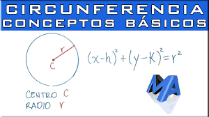
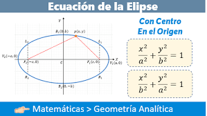
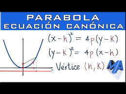
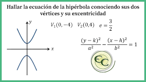

Cónicas
Las cónicas son curvas geométricas que surgen de la intersección de un plano y un cono en el espacio tridimensional. Estas curvas, que incluyen el círculo, la elipse, la parábola y la hipérbola, desempeñan un papel crucial en la geometría analítica y tienen aplicaciones extensas en diversas áreas como la física, la ingeniería y la astronomía.
Cada tipo de cónica presenta características distintivas que las hacen únicas y fascinantes. Desde la simetría perfecta del círculo hasta la asimetría intrigante de la hipérbola, las cónicas ofrecen una riqueza de formas y propiedades matemáticas que merecen explorarse.
Comprender las cónicas es fundamental para ampliar tu comprensión de la geometría analítica y aplicarla en problemas prácticos. ¡Sumérgete en el mundo intrigante de las cónicas y desbloquea nuevas perspectivas en tu estudio de las formas geométricas!
Figuras Cónicas:
-
Círculo
El círculo es una cónica que presenta una simetría perfecta alrededor de su centro. Todos los puntos de la circunferencia tienen la misma distancia al centro del círculo.
-
Elipse
La elipse es una cónica que tiene dos focos. La suma de las distancias desde cualquier punto de la elipse hasta los dos focos es constante.
-
Parábola
La parábola es una cónica que tiene un eje de simetría y un foco. Todos los puntos de la parábola tienen la misma distancia al foco y al eje de simetría.
-
Hipérbola
La hipérbola es una cónica que tiene dos focos. La diferencia de las distancias desde cualquier punto de la hipérbola hasta los dos focos es constante.